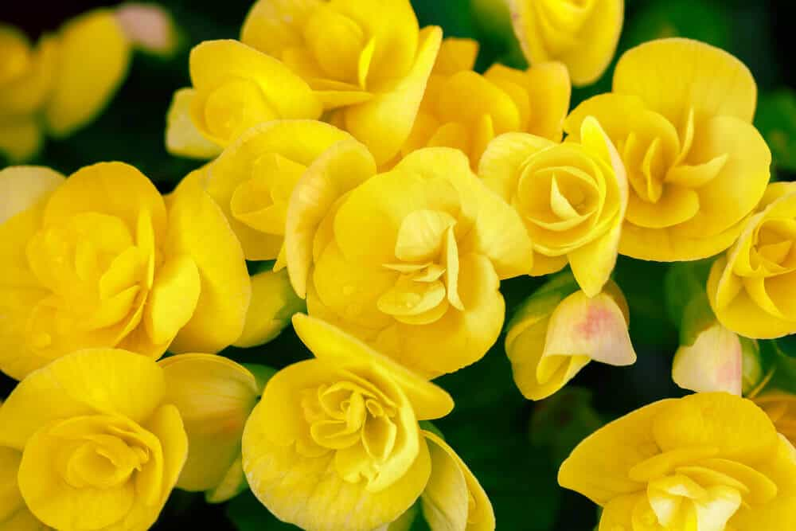

Coreopsis is a cheerful yellow flower that happens to be native to lowa. It keeps pollinators happy and bringsplenty of sunny cheer from early summer through fall. There are 100 varieties of coreopsis, including both perennialand annual types. They are also available in a wide range of colors, from vibrant bright yellow to rich orange and deep red,if you'd like to experiment with an even broader spectruml.Back to Home page...
